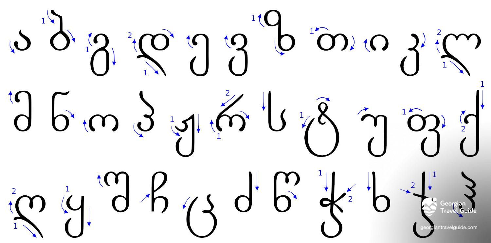
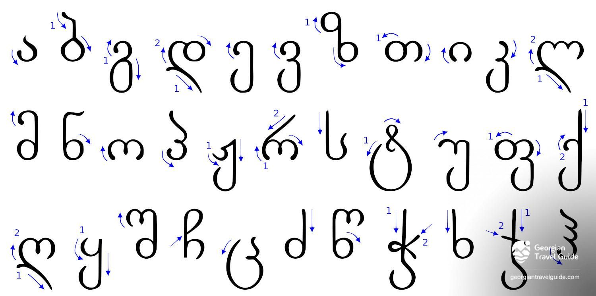

ქართული დამწერლობა — ანბანური დამწერლობა, რომელსაც იყენებს ქართული ენა და მისი მონათესავე ქართველური ენები, ასევე დროგამოშვებით სხვა კავკასიური ენებიც (მათ შორის ოსური და აფხაზური ენები 1940-იან წლებში). თანამედროვე ქართულ ანბანს 33 ასო აქვს, ძველ ანბანში კი 38 ასო-ნიშანი იყო, რომელთაგან ხუთი თანამედროვე ქართულში აღარ გამოიყენება.
ქართლის ცხოვრების თანახმად, ქართლის პირველმა მეფე ფარნავაზმა „განავრცო ენაჲ ქართული“ და „შექმნა მწიგნობრობაჲ ქართული“.
„და ესე ფარნავაზ იყო პირველი მეფე ქართლსა შინა ქართლოსისა ნათესავთაგანი. ამან განავრცო ენაჲ ქართული და არღარა იზრახებოდა სხუაჲ ენაჲ ქართლსა შინა თჳნიერ ქართულისა, და ამან შექმნა მწიგნობრობაჲ ქართული.“
| დამწერლობა | ნიმუში | გამოყენების პერიოდი |
|---|---|---|
| ასომთავრული/მრგვლოვანი |  |
I-XI სს. |
| ნუსხური |  |
XII-XVIII სს. |
| მხედრული |  |
XI ს-დან-დღემდე. |
საქართველოს კულტურული მემკვიდრეობის დაცვის ეროვნული სააგენტოს ინიციატივით, ქართული ანბანის სამ სახეობას – ასომთავრულს, ნუსხურსა და მხედრულს, 2015 წლის მარტში არამატერიალური ეროვნული კულტურული მემკვიდრეობის ძეგლის სტატუსი მიენიჭა სახელწოდებით „ქართული ანბანის სამი სახეობის ცოცხალი კულტურა“,2016 წლის 30 ნოემბერს კი იუნესკომ კაცობრიობის არამატერიალური კულტურული მემკვიდრეობის წარმომადგენლობით ნუსხაში შეიტანა.